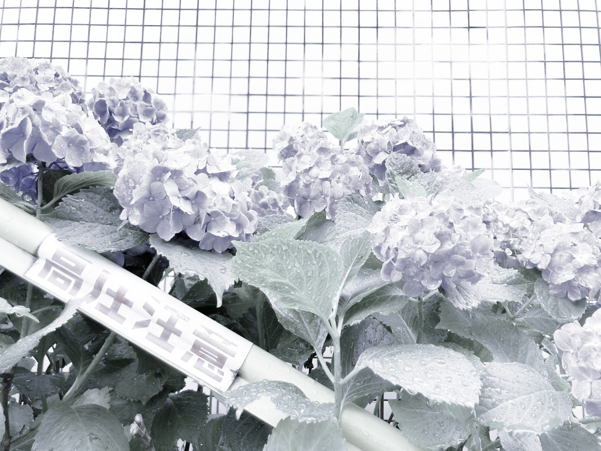

つくってきたもの
PORTFOLIO
WORKS
現在は主にクリエイティブディレクションを主軸に活動中で、参画したプロジェクト／クリエイティブ制作の一部を掲載しております。
直近のクライアントの制作物は掲載が難しいため、詳細はお問い合わせください。
ざっくり概要
-
大手不動産会社運営ミュージアム：オウンドメディア（コンテンツマーケティング主体の大規模サイト）の制作ディレクション
-
大手飲料メーカー：オフライン媒体の制作ディレクション
-
運用型広告用LPの制作ディレクション（LPO/EFO）
-
大手美容メーカー／EC：CRM施策のクリエイティブディレクション
-
スタートアップ企業：各プロダクトのクリエイティブディレクション／プロジェクトマネジメント
-
デザインメンター（講師）
WEB
GRAPHIC
ARCHIVE
CONTACT
お気軽にご相談ください
CONTACT →